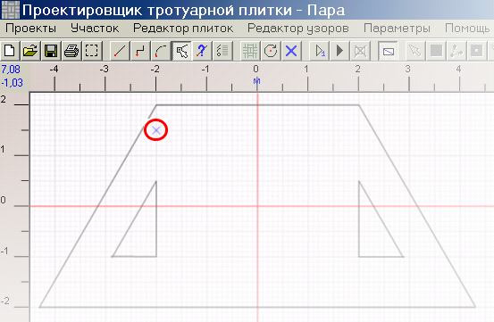

Черчение и редактирование графических элементов намеренно вынесено в отдельную главу - те же приемы и методы используются и для черчения плитки. Основные моменты будут здесь упоминаться для наглядности.
Контур участка рисуется сплошными линиями. Если проявить аккуратность, в участке точечными линиями можно обозначить бордюры и сливы. Но поскольку операция рисования не-сплошной линией потенциально опасна для участка, и к тому же обработка бордюров и сливов не предусмотрена программой, программа не предоставляет возможности рисовать в проекте точечными линиями. Можно нарисовать все сплошными линиями, а потом нужные линии изменить на точечные.
Размеры на чертеже плитки могут быть указаны в метрах, сантиметрах или миллиметрах. Это можно установить в настройках. Если участок большой, он может не умещаться на экране. Можно уменьшить масштаб кнопкой
Особенное внимание нужно уделить стыковке линий. Это повлияет на точность вычисления площади участка и на точность заполнения. Если размеры участка замерены с погрешностью и не удается по предоставленным размерам нарисовать замкнутый контур, то допускается нестыковка соседних линий на 50 мм. Эту величину можно изменить в настройках.
|
Совет. В главе Черчение графических объектов описан способ рисования в крупном масштабе с Мини-дисплеем.
Практический совет: Рисование участка начните с линии, идущей вдоль стены, от порога, ворот, самой длинной или осевой линии участка (короче, той на которую заказчик обратит внимание в первую очередь). Считайте эту линию базовой и сориентируйте ее горизонтально или вертикально. Если не подходит ни одна из границ - временно проведите такую линию, закончив рисовать участок - не торопитесь удалять. Остальные линии границ участка сориентируйте правильно относительно базовой, а относительно осей координат как получится. |
Размер участка может быть больше места отведенного для рисования на чертеже, размеры чертежа нужно в этом случае изменить.
Внутри участка можно нарисовать замкнутые контуры, которые не будут заполнены плиткой. Например, клумбы.
После того, как контур готов, надо обозначить точку, с которой будет начинаться заполнение плиткой. Для этого надо нажать на панели инструментов кнопку и щелкнуть мышкой на чертеже в нужной точке. Начальная точка не всегда обозначится точно, задайте ей координаты через меню Участок -> Начальная точка -> Корректировать начальную точку .
Для примера нарисован такой участок:

|
Примечание. В примере начальная точка произвольна, в реальной работе она скорее всего должна быть расположена на границе или в углу участка. Но не за его пределами!
|
Теперь можно переходить к следующему этапу - выбрать узор.